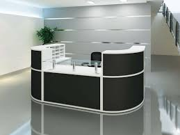

The library plays a pivotal role in fostering academic excellence and research within the Department of Computer Science. Serving as a knowledge hub, the library is an indispensable resource that empowers students and faculty alike to explore the ever-evolving landscape of computer science. It provides access to an extensive collection of books, journals, and digital resources, offering a rich tapestry of information crucial for coursework, research endeavors, and staying abreast of cutting-edge advancements in the field. The library serves as a quiet space for focused study and collaborative research discussions, facilitating an environment where ideas flourish and innovation takes root. With a commitment to supporting the academic journey of our community, the library is a cornerstone of our department, bridging the gap between theoretical knowledge and practical application in the dynamic realm of computer science.
Computer Lab

The Computer Science Department recognizes the paramount importance of its dedicated computer laboratory as a dynamic and integral asset to academic and research pursuits. The computer laboratory serves as a vibrant space where students engage in hands-on learning, applying theoretical concepts to real-world scenarios. Equipped with state-of-the-art hardware and software resources, this facility facilitates programming assignments, software development, and computational experiments, allowing students to hone their skills and gain practical experience. The laboratory is not merely a room filled with computers; it is a collaborative space where innovation thrives and collaborative problem-solving takes center stage. From coding projects to simulations, the computer laboratory is the incubator for creativity and critical thinking, preparing our students to navigate the complexities of the digital age with confidence and proficiency. As an essential component of our academic ecosystem, the computer laboratory reinforces our commitment to providing a comprehensive and enriching educational experience in the ever-evolving field of computer science.
Reception Desk

The Reception Desk serves as the welcoming gateway to the vibrant community within the Computer Science Department. More than just a physical point of contact, it is a central hub where students, faculty, and visitors can access essential information, seek guidance, and foster connections. Our dedicated staff at the Reception Desk play a pivotal role in creating a warm and inclusive environment, providing assistance with inquiries, scheduling, and facilitating effective communication. This focal point of interaction ensures seamless coordination of departmental activities, events, and inquiries, contributing to the overall efficiency and cohesion of our academic community. As the first point of contact, the Reception Desk embodies our commitment to accessibility, collaboration, and a supportive atmosphere within the Computer Science Department, fostering a positive experience for everyone who walks through our doors.